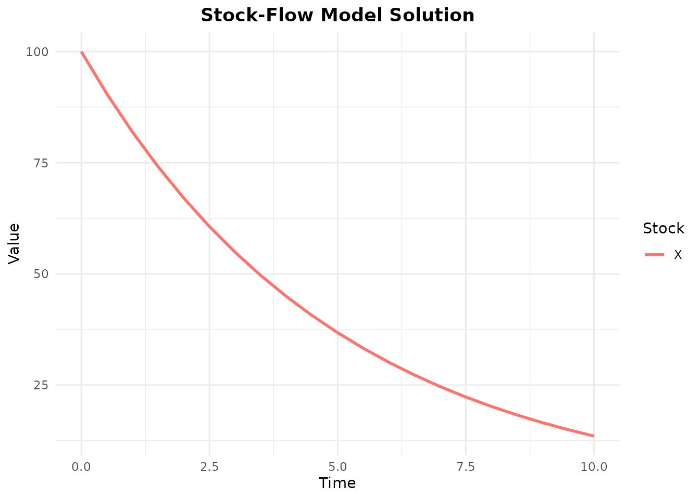

What is openstockflow?
openstockflow lets you build mathematical models using stock-flow diagrams—a visual way to represent systems with accumulations (stocks) and rates of change (flows).
Think of it like plumbing: - Stocks are tanks that hold quantities - Flows are pipes that move quantities between tanks - The package automatically generates differential equations and solves them
5-Minute Tutorial
Step 1: Create a Simple Model
Let’s model exponential decay: a quantity that decreases over time.
decay_model <- stock_flow_diagram(reset_ids = TRUE) %>%
add_stock("X", initial = 100) %>%
add_flow("decay",
from = "X",
to = NULL, # NULL means "out of the system"
rate = function(inputs, params) {
params$k * inputs$X
}
)
# View the structure
print(decay_model)
#> StockFlowDiagram
#> Stocks: 1
#> Flows: 1
#> Links: 1
#> Variables: 0
#> Sum variables: 0This creates the equation:
Step 2: Solve It
if (requireNamespace("deSolve", quietly = TRUE)) {
result <- solve_diagram(
decay_model,
times = seq(0, 10, by = 0.5),
params = c(k = 0.2)
)
# View first few rows
head(result, 10)
}
#> Stock-Flow ODE Solution
#> Time points: 10
#> Time range: [ 0 , 4.5 ]
#> Stocks: X
#> Parameters:
#> k = 0.2
#>
#> time X
#> 1 0.0 100.00000
#> 2 0.5 90.48383
#> 3 1.0 81.87316
#> 4 1.5 74.08192
#> 5 2.0 67.03206
#> 6 2.5 60.65310
#> 7 3.0 54.88119
#> 8 3.5 49.65855
#> 9 4.0 44.93292
#> 10 4.5 40.65699Step 3: Visualize It
if (requireNamespace("deSolve", quietly = TRUE)) {
plot_solution(result)
}
#> Warning: Using `size` aesthetic for lines was deprecated in ggplot2 3.4.0.
#> ℹ Please use `linewidth` instead.
#> This warning is displayed once every 8 hours.
#> Call `lifecycle::last_lifecycle_warnings()` to see where this warning was
#> generated.
The analytical solution is
Example: Population Growth with Carrying Capacity
Now something more interesting: logistic growth where a population grows but slows as it approaches a maximum capacity.
logistic <- stock_flow_diagram(reset_ids = TRUE) %>%
add_stock("Population", initial = 10) %>%
add_flow("births",
from = NULL,
to = "Population",
rate = function(inputs, params) {
# Growth slows as population approaches carrying capacity
growth_rate <- params$r * (1 - inputs$Population / params$K)
growth_rate * inputs$Population
}
)
print(logistic)
#> StockFlowDiagram
#> Stocks: 1
#> Flows: 1
#> Links: 1
#> Variables: 0
#> Sum variables: 0This implements:
if (requireNamespace("deSolve", quietly = TRUE)) {
logistic_result <- solve_diagram(
logistic,
times = seq(0, 50, by = 0.5),
params = c(r = 0.5, K = 1000)
)
# Plot growth curve
plot_solution(logistic_result)
# Check that it approaches carrying capacity
cat("Final population:", tail(logistic_result$Population, 1), "\n")
cat("Carrying capacity:", 1000, "\n")
}
#> Final population: 1000
#> Carrying capacity: 1000Example: Two-Stock System
A predator-prey model (simplified Lotka-Volterra):
predator_prey <- stock_flow_diagram(reset_ids = TRUE) %>%
add_stock("Prey", initial = 100) %>%
add_stock("Predator", initial = 10) %>%
add_flow("prey_growth",
from = NULL,
to = "Prey",
rate = function(inputs, params) {
params$alpha * inputs$Prey
}
) %>%
add_flow("predation",
from = "Prey",
to = "Predator",
rate = function(inputs, params) {
params$beta * inputs$Prey * inputs$Predator
}
) %>%
add_flow("predator_death",
from = "Predator",
to = NULL,
rate = function(inputs, params) {
params$delta * inputs$Predator
}
)
print(predator_prey)
#> StockFlowDiagram
#> Stocks: 2
#> Flows: 3
#> Links: 4
#> Variables: 0
#> Sum variables: 0Equations: - -
if (requireNamespace("deSolve", quietly = TRUE)) {
pp_result <- solve_diagram(
predator_prey,
times = seq(0, 100, by = 0.1),
params = c(alpha = 0.1, beta = 0.002, delta = 0.05)
)
# Plot both populations
plot_solution(pp_result)
# Phase plot shows cyclic dynamics
phase_plot(pp_result, "Prey", "Predator")
}
Alternative Syntax: Algebraic API
For those who prefer mathematical notation, there’s an algebraic API:
# Define components
S <- stock("S", initial = 999)
I <- stock("I", initial = 1)
R <- stock("R", initial = 0)
infection <- flow("infection",
rate = function(inputs, params) {
params$beta * inputs$S * inputs$I / 1000
}
)
recovery <- flow("recovery",
rate = function(inputs, params) {
params$gamma * inputs$I
}
)
# Compose with operators: %->% connects, %+% combines
sir <- S %+% I %+% R %+%
(S %->% infection %->% I) %+%
(I %->% recovery %->% R)
sir_diagram <- finalize(sir, reset_ids = TRUE)
print(sir_diagram)
#> StockFlowDiagram
#> Stocks: 3
#> Flows: 2
#> Links: 4
#> Variables: 0
#> Sum variables: 0This creates the classic SIR epidemic model!
Key Concepts Summary
Stocks
- Represent accumulations (population, water in tank, money in account)
- Have initial values
- Change over time according to flows
Flows
- Represent rates of change
- Have
fromandtostocks (or NULL for external sources/sinks) - Defined by rate functions that depend on:
- Current stock values (
inputs$StockName) - Parameters (
params$ParamName)
- Current stock values (
Parameters
- Constants that control model behavior
- Passed to
solve_diagram() - Examples: birth rate, infection rate, decay constant
What’s Next?
- Introduction vignette: More examples including SEIR model with population conservation
- Composition: Learn to build complex models from simpler components (future)
- Stratification: Add dimensions like age groups or geographic regions (future)
Common Patterns
Conservation
When modeling conserved quantities:
model %>%
add_sum_variable("Total", stocks = c("Stock1", "Stock2", "Stock3"))The total will remain constant.
Tips
- Start simple: Build up complexity gradually
- Use meaningful names: Stock and flow names become equation variable names
- Check units: Make sure rates have correct dimensions
- Validate: Check that your model behaves as expected for extreme parameter values
-
Visualize first: Use
plot(diagram)to see structure before solving
Getting Help
?stock_flow_diagram # Help on diagram construction
?solve_diagram # Help on solving
?plot.StockFlowDiagram # Help on visualizationSession Info
sessionInfo()
#> R version 4.5.2 (2025-10-31)
#> Platform: x86_64-pc-linux-gnu
#> Running under: Ubuntu 24.04.3 LTS
#>
#> Matrix products: default
#> BLAS: /usr/lib/x86_64-linux-gnu/openblas-pthread/libblas.so.3
#> LAPACK: /usr/lib/x86_64-linux-gnu/openblas-pthread/libopenblasp-r0.3.26.so; LAPACK version 3.12.0
#>
#> locale:
#> [1] LC_CTYPE=C.UTF-8 LC_NUMERIC=C LC_TIME=C.UTF-8
#> [4] LC_COLLATE=C.UTF-8 LC_MONETARY=C.UTF-8 LC_MESSAGES=C.UTF-8
#> [7] LC_PAPER=C.UTF-8 LC_NAME=C LC_ADDRESS=C
#> [10] LC_TELEPHONE=C LC_MEASUREMENT=C.UTF-8 LC_IDENTIFICATION=C
#>
#> time zone: UTC
#> tzcode source: system (glibc)
#>
#> attached base packages:
#> [1] stats graphics grDevices utils datasets methods base
#>
#> other attached packages:
#> [1] magrittr_2.0.4
#>
#> loaded via a namespace (and not attached):
#> [1] crayon_1.5.3 vctrs_0.6.5 cli_3.6.5 knitr_1.51
#> [5] rlang_1.1.6 xfun_0.55 generics_0.1.4 S7_0.2.1
#> [9] textshaping_1.0.4 jsonlite_2.0.0 deSolve_1.40 labeling_0.4.3
#> [13] glue_1.8.0 htmltools_0.5.9 ragg_1.5.0 sass_0.4.10
#> [17] scales_1.4.0 rmarkdown_2.30 grid_4.5.2 tibble_3.3.0
#> [21] evaluate_1.0.5 jquerylib_0.1.4 fastmap_1.2.0 yaml_2.3.12
#> [25] lifecycle_1.0.4 compiler_4.5.2 dplyr_1.1.4 RColorBrewer_1.1-3
#> [29] fs_1.6.6 pkgconfig_2.0.3 farver_2.1.2 systemfonts_1.3.1
#> [33] digest_0.6.39 R6_2.6.1 tidyselect_1.2.1 pillar_1.11.1
#> [37] bslib_0.9.0 withr_3.0.2 tools_4.5.2 gtable_0.3.6
#> [41] pkgdown_2.2.0 ggplot2_4.0.1 cachem_1.1.0 desc_1.4.3